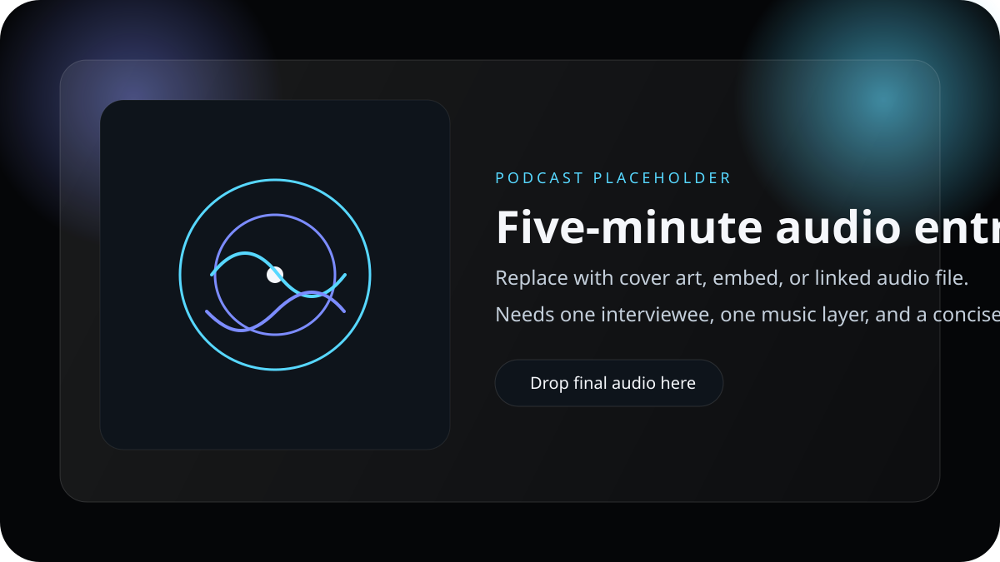

Feel
The human cost.
The gap does not stay in a payslip. It follows people home and changes what feels possible,
what feels safe, and what gets postponed.

Audio feature
Five minutes that make the gap personal
Interview, narration, and atmosphere compress the issue into something intimate enough to hear, rather than only calculate.
Its short runtime makes the piece easier to replay, share, and carry into conversation.
The line itself
When pay shrinks, choices shrink
“When pay shrinks, choices shrink. The gender pay gap is a structural loss of time, safety, and freedom.”
It names the part the spreadsheet cannot hold on its own: how lower pay reshapes housing, care, study,
movement, and long-term confidence.